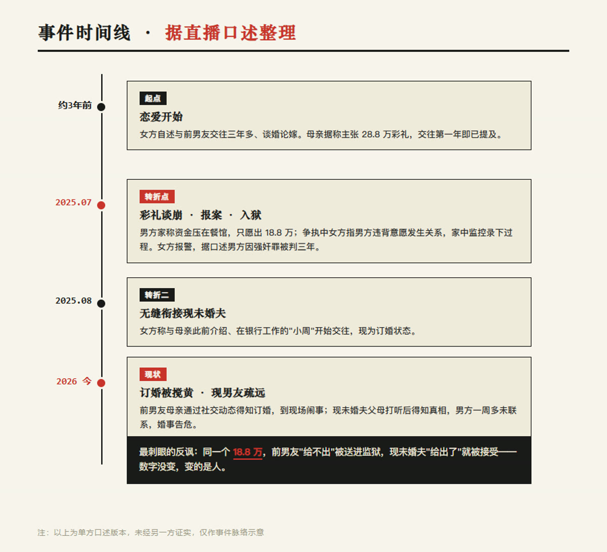

28.8万彩礼谈崩，前男友判了3年
一场连麦直播里，一个28岁的女生讲了自己的故事：谈了三年恋爱，因为28.8万彩礼谈崩，前男友在她出租屋"强行发生关系"，她报警，男方因强奸罪被判三年。她声称本意只是"吓唬"。一年后的订婚现场，前男友母亲来闹，现未婚夫得知真相后开始疏远。我们只听到她的一面之词——但口述里暴露出的每个要害，都比故事本身更值得拆。
据当事人直播口述（以下均为单方陈述，未经另一方证实）：2025年7月，女方与前男友谈婚论嫁，女方母亲主张28.8万彩礼，男方家经营餐馆、称资金压在店里，只愿出18.8万。某晚男方到女方出租屋继续谈，双方争执，女方要其离开，男方被指违背其意愿与其发生关系；女方家中因养猫装有监控，记录下过程。男方当场挑衅"你报啊"，女方遂报警。
据其口述，男方因强奸罪被判三年；案发后前男友父母反复上门、言语骚扰，女方道歉但无法撤案，后迁居同城另一城区躲避。2025年8月，她与母亲此前介绍、在银行工作的"小周"开始交往，如今订婚——而小周给出的彩礼，恰是当年前男友给不出的18.8万。前男友母亲通过女方社交动态得知订婚消息，到现场闹事、散布言论；小周父母打听后得知真相，小周已一周多未联系，婚事悬了。

▲ 图注：据口述整理的事件时间线（号外风 · 示意）
"我如果知道会判3年的话，我肯定不会报。毕竟我跟他谈了3年，不是说一点感情也没有。"
—— 当事人在直播中自述
这是一份只有一方的口述。男方是否上诉、判决细节、双方完整说法，直播都没给。下面的拆解，拆的是"口述里暴露出的认知错位"，不是给这起案件下结论。
这件事最容易被一键站队，但两边的逻辑要分开看。
女方逻辑 ▸ 他违法在先，我报警天经地义；只是没料到会判这么重，本意是让他"长个教训"。
围观视角 ▸ 把刑事报案当筹码、彩礼谈不拢就把人送进去，再用"我也是受害者"收尾，寒的是普通人的心。
第一，若男方确实违背意愿，强奸罪的成立与两人是否恋爱无关——这一点，报警本身无可指摘，是公民权利。第二，"以为只是吓唬"恰恰是最危险的认知错位：刑事报案一旦进入司法程序，就不是私人之间的"筹码"，后果由法律决定，你喊停也停不下来。第三，18.8万这个数字，前男友当年"给不出"、现未婚夫却"给出了"——同一个数，换个人就"可以了"，是整件事里最刺眼的反讽。
真正的麻烦不是"谁更可怜"，而是这代人在亲密关系里普遍缺位的那点法律常识——把报案当讨债、把彩礼当债务、把别人的人生当自己的情绪出口。一个视频能火，正因为这种错位太多人似曾相识。
我们也把口述里最该补的几条常识，单列在下面，与站队无关，只与边界有关。
法律科普 · 这几条边界
01 · 强奸罪的边界：违背妇女意志即构成，恋爱/婚姻不豁免；若属实涉罪，报案正当。
02 · 报案不是筹码：刑事立案后，被害人原则上不能单方面"撤案了事"，后果由司法决定。
03 · 彩礼是习俗非法定债务：谈不拢、未登记等情形下不返还不违法，用报案施压法律不支持。
04 · 灰色地带：明知不实仍报案意图使他人受刑事追究，可能涉诬告；以报案索取财物，亦可能触敲诈勒索边界。
05 · 隐私底线：公开直播讲述并暴露可识别细节，可能侵害相关人员名誉与隐私。
报警边界、彩礼性质、无缝衔接——你最想拆哪一条？评论区亮个观点，赞最高的下期单独写。
口径说明：事实均据直播口述整理，为单方版本，未经另一方证实；观点仅代表编辑部；本栏目不站队、只拆事。所涉法律点以现行规定与司法机关认定为准，本文不构成法律意见。